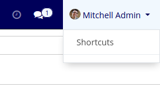
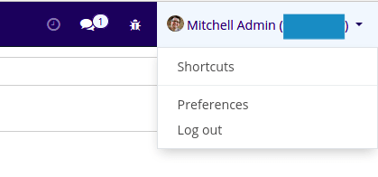

Features
This module Disables User menus(
Documentation
,
Support
,
My Odoo.com account
). Allows
Preferences
and
Log out
user menus when developer mode is activated.
Without Developer Mode

With Developer Mode
